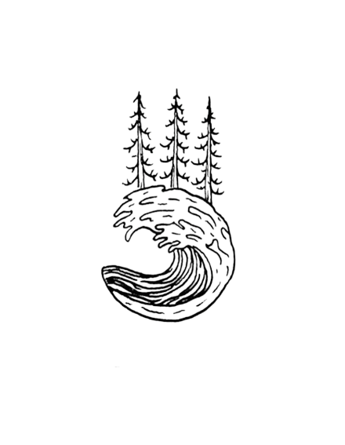
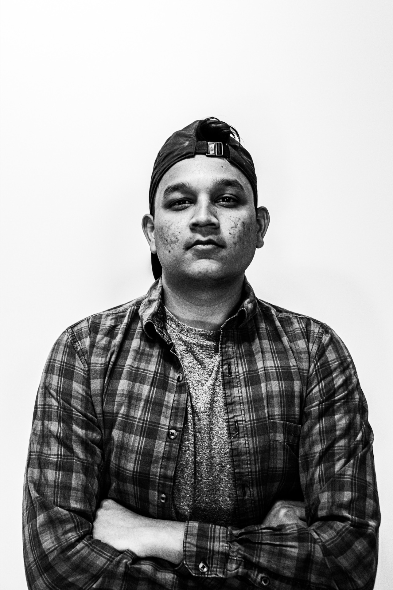

Rancho Patel — Photographer & Filmmaker
I don't just take photos — I chase moments. Give me a backpack, a camera, and a one-way ticket, and I'll bring back a story worth telling.
I'm Rancho — a photographer and filmmaker driven by an obsession with travel and adventure. I live for the kind of places that make your heart race: mountain ridges at sunrise, unmarked trails through dense jungle, remote coastlines where the only sound is the ocean and your own breathing. That's where I do my best work.
I picked up a camera because I wanted to hold onto the feeling of being somewhere completely alive. What started as shooting on road trips and hikes turned into a full-blown pursuit — travelling the world, documenting the raw and the real, and turning it all into visuals that make people feel something.
Whether I'm behind the lens capturing a still frame or directing motion, the goal is always the same: tell the story that words can't. The dust on a trail at golden hour. The silence before a storm breaks over the mountains. The look on someone's face when they reach the summit. That's what I live to create.
If you're looking for someone who'll go the extra mile — literally — let's make something together.